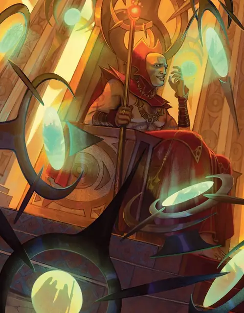

Хазлик
Hazlik
Средний Гуманоид (Человек, Волшебник), Хаотичный Злой, именной НИП

Класс Защиты 16 Инициатива +13 (23)
Хиты 154 (28к8 + 28)
Скорость 30 футов
| мод | спас | ||
|---|---|---|---|
| СИЛ | 10 | +0 | +0 |
| ЛОВ | 16 | +3 | +3 |
| ТЕЛ | 12 | +1 | +1 |
| мод | спас | ||
|---|---|---|---|
| ИНТ | 20 | +5 | +10 |
| МДР | 15 | +2 | +7 |
| ХАР | 16 | +3 | +3 |
Иммунитеты Психический; Очарованный
Чувства пассивное Восприятие 17
Языки Общий, Бездны, Великаний, Драконий, Инфернальный, Подземный
Опасность 14 (11 500 опыта или 13 000 опыта в Домене; БВ +5)
Особенности
Восстановление Тёмного владыки. Спустя 1к10 недель после смерти Хазлик возрождается с полными Хитами где-то в Хазлане.
Легендарное сопротивление (3/день, или 4/день в Домене). Если Хазлик проваливает спасбросок, он вместо этого может в нём преуспеть.
Сопротивление магии. Хазлик совершает с Преимуществом спасброски от заклинаний и прочих магических эффектов.
Действия
Мультиатака. Хазлик совершает три атаки Волшебным всплеском.
Волшебный всплеск. Бросок рукопашной или дальнобойной атаки: +10, досягаемость 5 фт. или дистанция 150 фт. Попадание: 21 (3к10 + 5) Силового урона.
Сотворение заклинаний. Хазлик сотворяет одно из следующих заклинаний (заклинательная характеристика — Интеллект, Сл спасброска заклинаний 18):
Неограниченно: Волшебная рука, Доспехи мага, КЗ, Маскировка, Невидимость, Обнаружение магии, Обнаружение мыслей, Свет, Фокусы
2/день каждое: Полёт, Молния, версия 5-го уровня
1/день каждое: Конус холода, Наблюдение, Сокрытие разума, Телепортация
Бонусные действия
Выброс дикой магии. Хазлик высвобождает случайный магический феномен и нацеливает его в видимое им существо в пределах 120 футов. Когда Хазлик Окровавлен, он высвобождает два феномена (бросьте 1к4; перебросьте, если Хазлик уже использовал выпавший феномен в этом ходу):
1. Туманное движение. Хазлик может телепортировать цель в видимое им незанятное пространствов пределах 30 футов на твёрдой или жидкой поверхности, где цель способна физически уместиться.
2. Глазная гниль. Спасбросок Телосложения: Сл 18. Провал: Цель Ослеплена до конца своего следующего хода.
3. Ментальная вспышка. Спасбросок Интеллекта: Сл 18. Провал: 13 (2к12) Психического урона, и цель не может совершать действие Магия до конца своего следующего хода.
4. Схлопывание. Спасбросок Ловкости: Сл 18. Провал: Цель получает 10 (3к6) Силового урона. Провал или успех: Все существа в пределах 5 футов от цели получают 10 (3к6) Силового урона.
Реакции
Защитная магия (3/день). Хазлик сотворяет Контрзаклинание или Щит в ответ на условие этого заклинания (заклинательная характеристика — та же, что для Сотворения заклинаний).
Легендарные действия
У этого существа есть 3 использования Легендарных действий (или 4 использования в Домене); оно может немедленно после окончания хода другого существа потратить одно использование, чтобы совершить одно из следующих действий. Существо восполняет все потраченные использования в начале каждого своего хода.
Волшебный удар. Хазлик совершает одну атаку Волшебным всплеском.
Волшебный телепорт. Хазлик телепортируется на расстояние вплоть до 60 футов в видимое им незанятое пространство, и каждое существо в пределах 10 футов от покинутого им пространства получает 11 (2к10) Силового урона. Хазлик не может совершить это действие снова до начала своего следующего хода.
Бонус мастерства +5
Хазлик
Тёмный владыка отчаяния и магических катастроф
Эгоманьяк и параноик, архимаг Хазлик цепляется за свою власть, хотя все его магические амбиции сверхъестественным образом подавлены. С тех пор как Хазлик попал в Хазлан, его магия стала нестабильной. Сотворённые им заклинания ведут себя непредсказуемо и быстро угасают — большинство держится не больше часа, а его магические творения разваливаются где-то за день. Мысль о том, что кто-то узнает об этом, приводит Тёмного владыку в ужас, и потому он выдаёт чужие труды за свои, шпионит за возможными соперниками и благоволит безрассудным экспериментам, что должны постичь природу магии и его домена.
Хазлика мучают яркие кошмары, в которых былые соперники глумятся над ним и терзают его. Тёмный владыка избегает сна, употребляя магические настойки, чтобы бодрствовать, но это заставляет его метаться между приступами изнеможения, нервной дрожи и паранойи.
Хазлик знает, что его домен разрывают на части магические катастрофы — многие из которых сотворил он сам. Однако опустошение собственных земель он открыто отрицает: страх того, что всё сыплется как домино, борется в нём с неспособностью признать свою неправоту.
История Хазлика
Хазлик возвысился в рядах безжалостных Красных Волшебников Тэя из мира Торил. Высокомерный, убеждённый, что смертность — это слабость, он искал сокрытые тайны магии, пути в глубины психики и власть над реальностью.
По мере роста его могущества у Хазлика появлялись соперники среди других Красных Волшебников, и многие из этих противостояний заканчивались магическими шрамами на телах его врагов. Но одного соперника Хазлик никак не мог одолеть — волшебника Индрефика. Со временем Хазлик стал одержим Индрефиком, считая его единственным достойным оппонентом. Индрефик разделял гениальность и надменность Хазлика; около года они сходились то как жестокие враги, то как страстные любовники. Они подстёгивали друг друга к свершениям магической гениальности — одновременно революционным и неописуемым. Кульминация наступила, когда Хазлик узнал, что Индрефик замыслил предать его, чтобы снискать благосклонность правящих Тэем зулкиров. Разбитый горем и взбешённый, Хазлик пленил Индрефика и подверг его кошмарным магическим манипуляциям, навсегда превратив в живой, истерзанный болью магический портал. Своё творение Хазлик преподнёс зулкирам, надеясь получить их покровительство.
Зулкиры же открыли, что Индрефик вовсе не предавал Хазлика. Напротив, правящие маги следили за возвышением этой пары и, опасаясь их амбиций, замыслили избавиться от них ещё до того, как те стали реальной угрозой. Более того, превращение Индрефика они сочли чудовищным. В наказание зулкиры постановили: каждый маг, которому Хазлик нанёс шрам, вправе сделать с ним то же самое, пометив его своим личным символом. Когда первый из толпы соперников Хазлика приблизился к волшебнику с клеймом в руках, тот бежал сквозь стенающий портал, которым стал Индрефик.
Хазлик вынырнул посреди агонизирующих кошмарных пейзажей разума Индрефика. Сам того не желая, он попал в Домен Ужаса, известный как Земли Кошмаров, где его преследовали вопли и проклятия Индрефика. После месяцев мучений Хазлик вырвался в Туманы и в конце концов выбрался в земли, не ведавшие магии. Его тэйские татуировки стали золотыми и исказились в символы, означавшие «предатель». Ничуть не смутившись, Хазлик с помощью магии подчинил жителей этого нового края, присвоил себе титул зулкира и нарёк свои владения Хазланом.
Домен Хазлика
Хазлан, домен Хазлика, изменяется из-за его присутствия, что создаёт следующие эффекты:
• Закрытие границ. Когда Хазлик находится в домене, он способен по желанию закрывать или открывать границы Хазлана. Когда границы закрыты, Туманы вокруг Хазлана наполняются дикими магическими явлениями. Существо, впервые за ход входящее в Туманы или начинающее в них ход, должно преуспеть в спасброске Ловкости Сл 15, иначе получит 5 (1к10) Силового урона и станет Опутано до начала своего следующего хода. Существо совершает этот спасбросок лишь раз за ход.
• Истерзанная магия. Всякий раз, когда существо (кроме Хазлика и его союзников) сотворяет заклинание с ячейкой 5-го уровня или выше, оно должно совершить бросок по таблице «Всплески дикой магии», создавая случайный магический эффект.
• Магические кошмары. Когда Хазлик находится в своём логове — Венефике, — он может сотворять заклинание Подсматривание, не нуждаясь в Материальных компонентах (заклинательная характеристика — та же, что для его действия Сотворение заклинаний). При сотворении заклинания таким образом его дистанция действия — весь Хазлан; Хазлик может видеть через сенсор, но не слышать; и сенсор может появиться только на Оке Хазлика.
Если Хазлик умирает, все эти эффекты мгновенно исчезают. Они возникают снова, если Хазлик возрождается (см. Восстановление Тёмного владыки).